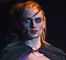
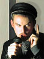
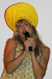
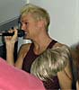
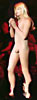
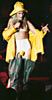
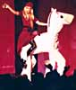
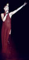
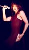

Dennis
Agerblad appers on the dunst CD "odéur" with two songs
Dennis
Agerblad appers on the dunst CD "odéur" with two songswww.dunst.dk
| Diskotek |
| Hør brudstykker af Dennis Agerblad's musik. Klik på den sang du vil høre. |
| dunst "odéur" | 17-Marts-2005 |
|
Dennis
Agerblad appers on the dunst CD "odéur" with two songs www.dunst.dk |
|
| dunst går i COMA | 7-Aug-2004 |
|
It's All a Dream.mp3 "I wanna turn everything upside down" Tekst, Musik, Sang & Kor: Dennis Agerblad. |
|
| CROSS DRESS! | 10-April-2004 |
|
Stik Your Penis In My Asshole.mp3 "It feels so good" Tekst, Musik, Sang & Kor: Dennis Agerblad. |
|
| Primate Nite | 26-Apr-2003 |
|
Primate Nite.mp3 0:33 min. Størrelse 529 kb "I'm gonna suck you dry, till you got no tears left to cry. This is a primate nite. I'm gonna hold you tight" Tekst, Musik, Sang & Kor: Dennis Agerblad. |
|
|
Forelsket I Et Dyr.mp3 0:30 min. Størrelse 476 Kb "Hvis jeg synes den minder lidt om en hest så laver den sig om til en hval." Tekst, Musik, Sang & Kor: Dennis Agerblad. |
|
|
I Want Your Shit.mp3 0:28 min. Størrelse 453 Kb "I want your shit on my skin. I want your puke in my hair. I want your...in my mouth." Tekst, Musik, Sang & Kor: Dennis Agerblad. |
|
| Arty Farty dunst Gay Avantgarde Cabaret | 22-Feb-2003 |
 Penis Anus (belong together).mp30:32 min. Størrelse 505 kb "A Penis is a peace of meat. When you are lonly that is what you need." Tekst, Musik, Sang & Kor: Dennis Agerblad. Guitar: Messell. |
|
 I'm
Just a Normal Man (In a Dress).mp3 I'm
Just a Normal Man (In a Dress).mp3 0:33 min. Størrelse 531 Kb "I'm very normal. I wear normal makup, and normal clothes such as this normal dress.. " Tekst, Musik, Sang & Kor: Dennis Agerblad. |
|
 Midnight
Lover.mp3 Midnight
Lover.mp3 0:32 min. Størrelse 507 Kb "Every night when I'm sleaping. You appear..." Tekst, Musik, Sang & Kor: Dennis Agerblad. |
|
| Dennis Agerblads sange fra World AIDS Day |
01-Des-2002 |
|  Dødens Pølse.mp30:27 min. Størrelse 426 kb "Han er en flot fræk fyr. Han dyrker sex som et dyr. Men imellem hans ben hænger dødens pølse." Tekst, Musik, Sang & Kor: Dennis Agerblad. Harmonika: Michael Netschajeff. |
|
|
Hvis du viste.mp3 0:29 min. Størrelse 466 Kb "Hvis du viste hvad det var du gik ind til ville du nok vende om igen. " Tekst, Musik, Sang & Kor: Dennis Agerblad. Harmonika: Michael Netschajeff. |
|
| Dennis Agerblads sange fra le Freak Festen |
16-Nov-2002 |
|
Tissevandmand.mp3 0:40 min. Størrelse 627 kb "70% af min krop var vand. Men så malede jeg det gult med en tus. Og så blev det til tis." Tekst, Musik, Sang: Dennis Agerblad. Guitar, Bas: Terji Messell. Munkekor: Terji Messell, Peter Christian & Dennis Agerblad. |
|
|
Det Syngende Røvhul.mp3 0:33 min. Størrelse 523 Kb "Brrrrrr brr brr, Brrrrrr brr brr brr brr br." Sang, Kor, Musik: Dennis Agerblad. Guitar, Bas: Terji Messell. |
|
| Dennis Agerblads performance til Copenhagen Gay and Lesbian Film Festival | 19-Okt-2002 |
|  Pornomodel.mp30:36 min. Størrelse 578 kb "Jeg er pornomodel, boller med mig selv" Tekst, Stemmer, Sang, Onani-snaske lyde: Dennis Agerblad. |
|
| Dennis Agerblads sang til Kulturnatten | 11-Okt-2002 |
|  Jeg tænker på dig.mp30:37 min. Størrelse 592 kb Tekst, Stemmer, Kor, Musik: Dennis Agerblad. Trumpet: Anders Juhl Nielsen. |
|
| Dennis Agerblads sang til Mermaid Pride på Rådhulspladsen | 17-Aug-2002 |
 Røvhulspladsen.mp3 Røvhulspladsen.mp3
0:32 min. Størrelse 502 kb Dennis Agerblad sang for 30.000 mennesker. Tekst, Stemmer, Kor, Musik: Dennis Agerblad. Trumpet: Anders Juhl Nielsen. |
|
| Dennis Agerblads sange fra FRØKEN VERDEN |
10-Aug-2002 |
|  Hverdagstøj.mp30:40 min. Størrelse 627 kb "Ved de overhoved hvordan jeg ser ud? Det føles på kroppen som en ekstra hud som er blevet mit hverdagstøj." Tekst, Sang, Musik: Dennis Agerblad. Kor: Guxi og Dennis Agerblad. |
|
|
 Strandtøj.mp30:33 min. Størrelse 523 Kb "Jeg ændrer min stemme til sopran, eller jeg prøver at lave den høj. Jeg scorer alle fiskerne, i mit strandtøj." Tekst, Sang, Kor, Musik: Dennis Agerblad. |
|
|
 Festtøj.mp30:29 min. Størrelse 469 Kb "Når jeg er til fest sætter jeg mig op på min hvide hest og så er jeg en færøsk prinsesse." Tekst, Sang, Musik: Dennis Agerblad. Kor: Guxi og Dennis Agerblad Sangen indeholder samples fra nummeret "Living On My Own" med bandet Messell. Dennis Agerblad blev nr.2 |
|
| Dennis Agerblads sange fra dunst gay night cabaret |
08-Jun-2002 |
| Bol
Mig.mp3 0:41 min. Størrelse 651 Kb "Sikken en lille tissemand du har! Skal jeg hjælpe dig med at gøre den større?" Tale, Stønnelyde, Musik, Tekst, Keyboard programmering: Dennis Agerblad. |
|
 Rumpe.mp3 Rumpe.mp3
0:30 min. Størrelse 478 Kb "Min rumpe har sådan noget rumpelugt" Råben og skrigen, Rumpestemmer, Musik, Tekst, Keyboard programmering: Dennis Agerblad. |
|
|
 Tis På Mig.mp30:33 min. Størrelse 530 Kb "Jeg bli'r så varm når han tisser på mig" Sang, Kor, Musik, Tekst, Keyboard programmering: Dennis Agerblad. |
|
|
 Lesbisk Sadist.mp30:36 min. Størrelse 564 Kb "Jeg nulrer brystvorterne af dig og suger mælken ud med en støvsuger" Tale, Sang, Kor, Musik, Tekst, Keyboard programmering: Dennis Agerblad. |
|